工作之外，我也有热爱的生活
运动、旅行、自媒体创作——这些经历让我保持好奇、善于表达，也锻炼了内容策划与社群运营的能力。
球场上释放能量
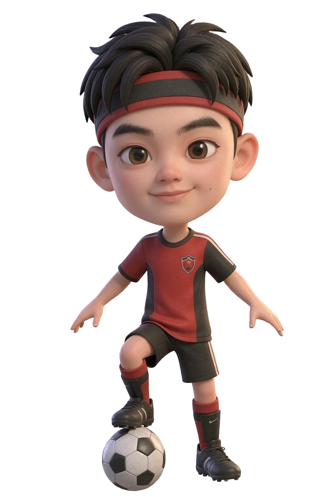
足球 · Football
校队中场调度，享受团队配合与临门一脚。
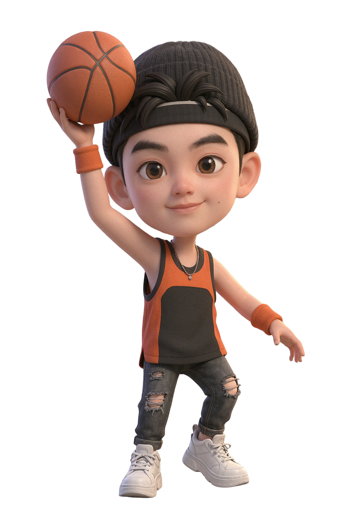
篮球 · Basketball
周末球场常客，偏爱突破分球与盯人防守。
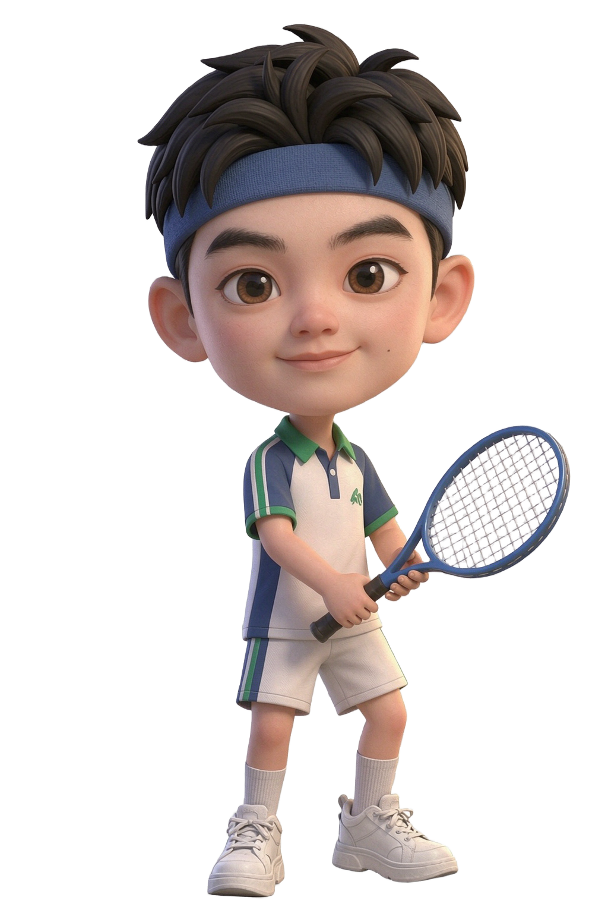
网球 · Tennis
喜欢一发制胜的干脆，也享受多拍拉锯的耐心。
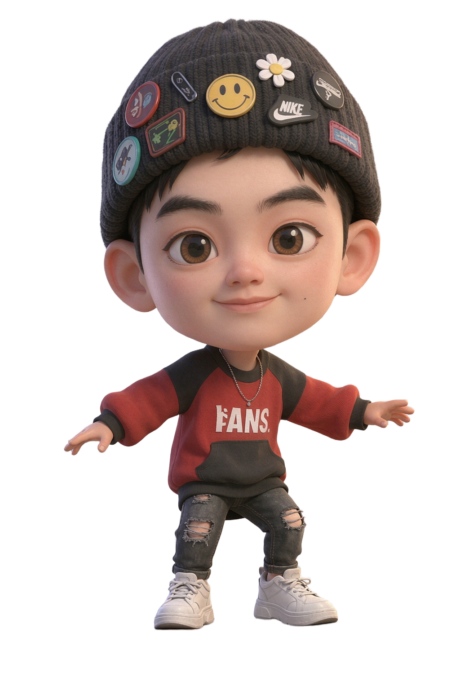
滑板 · Skateboard
街头自由的味道，摔了爬起来继续练。
山川湖海，脚步不停
用相机记录下那些让心脏跳得更用力的风景。

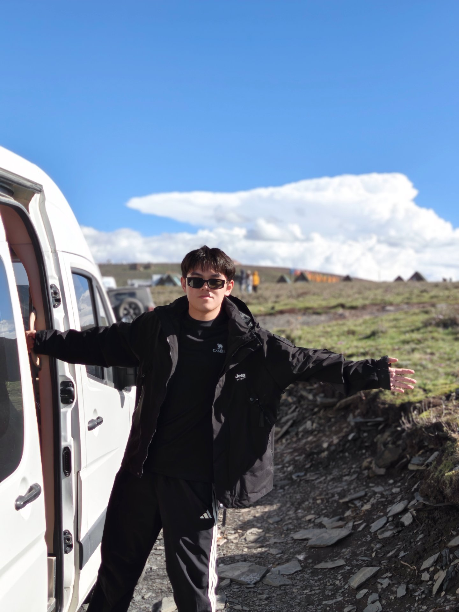

从 0 到粉丝榜第一的内容探索
高中时因一档选秀节目入坑，从剪辑照片视频开始，到海外搬运、粉丝互动、系列内容运营，不到一个月成长为头部粉丝账号。
第一条关于"她"的创作内容
起初只是剪辑关于 NENE 的照片视频，没想到作品开始被更多人看到，也第一次感受到"内容能连接同好"的力量。

第一条播放量破万、阅读量破万、点赞破千的内容
一条"电竞少女 NENE"的视频突然破圈，播放量和互动量都迎来第一次指数级增长，也让我意识到热点捕捉与选题的重要性。
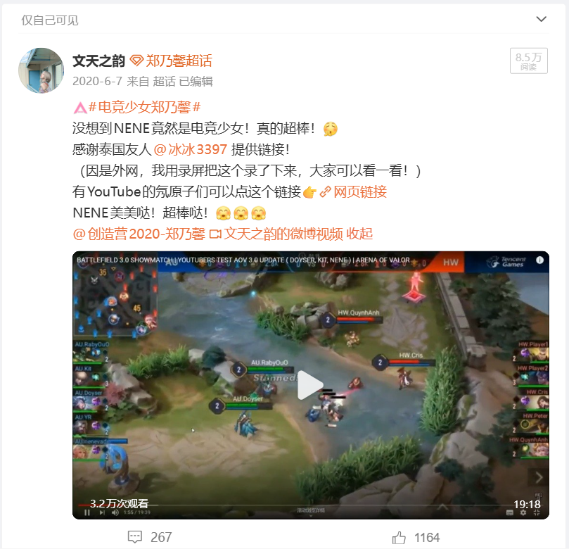
系列图：持续输出的内容主线
从单条爆款转向主题化、系列化运营，考古系、居家系、特种兵系、羽毛系、撸猫系……通过固定栏目培养粉丝追更习惯。


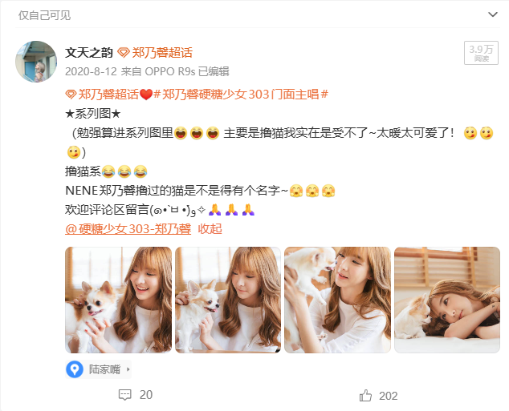
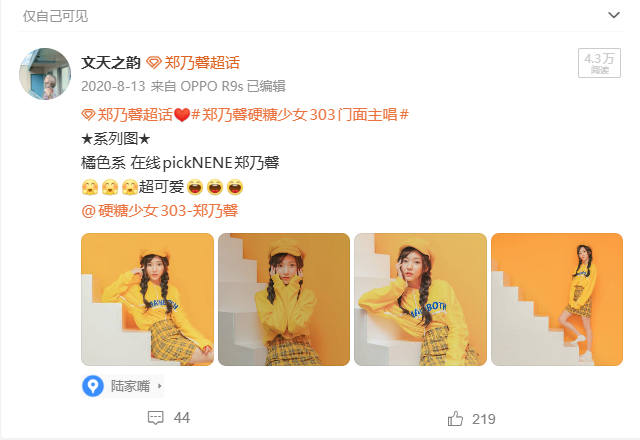

表情包系列：把"搬运"变成"原创"
不再只做海外搬运，开始自制表情包、二创图文，用更轻量、更接地气的方式和粉丝互动，逐步建立个人创作标签。
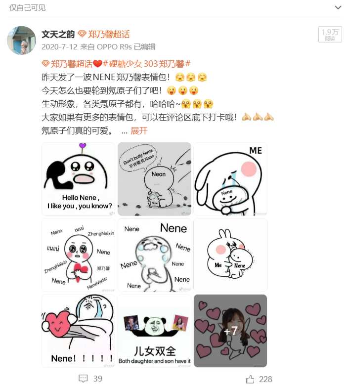

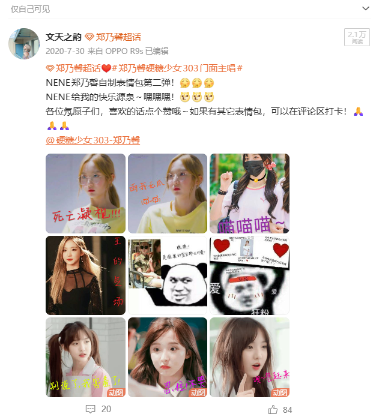
第一次突破创新：增设互动板块
不满足于单向输出，开始做"系列图投票统计"等互动玩法，让粉丝参与选题，提高社群活跃度与粘性。
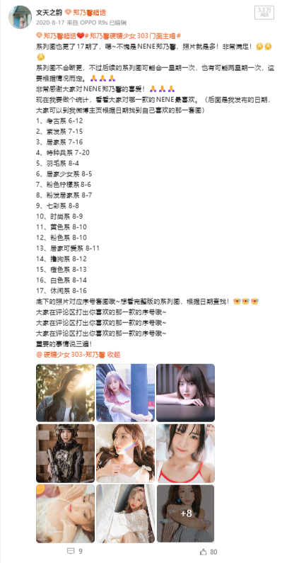
粉丝榜第一
连续 4 周上榜，并在某一周期登顶粉丝榜第一。从 0 经验小白到头部大粉，验证了自己的内容敏感度和执行力。
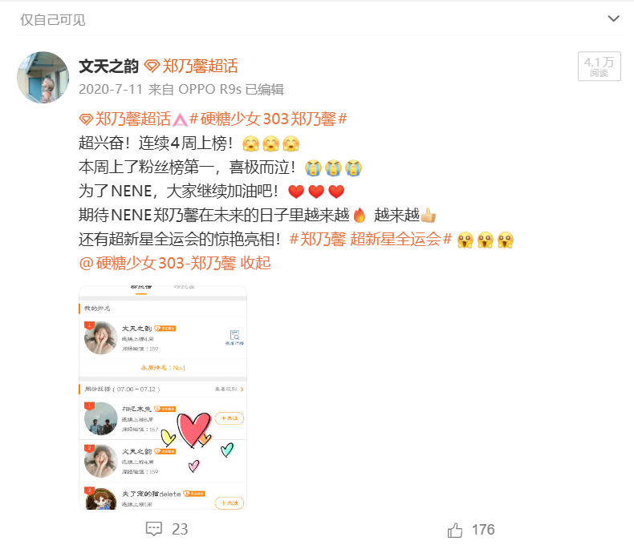
选秀结束后：持续剪辑与活动宣传
节目收官后没有停更，反而围绕舞台表演、综艺片段做二次剪辑与活动宣传，让账号热度持续延续。

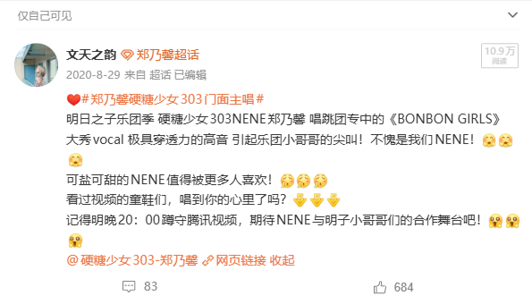
成绩单：一次完整的内容运营闭环
从选题、生产、互动到数据复盘，短短数月跑通了自媒体账号的完整链路。
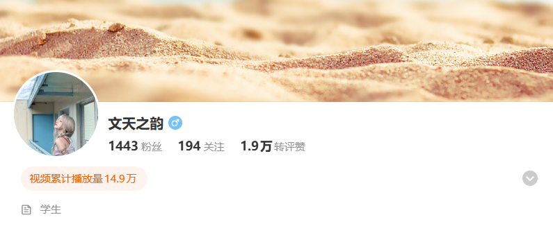

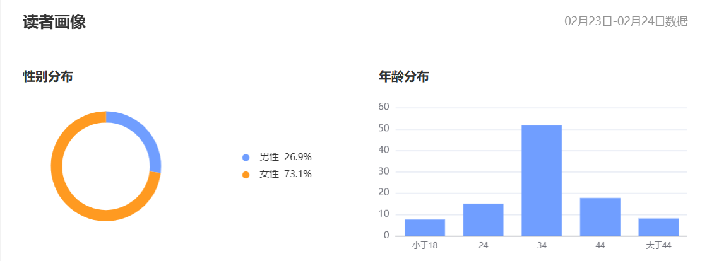
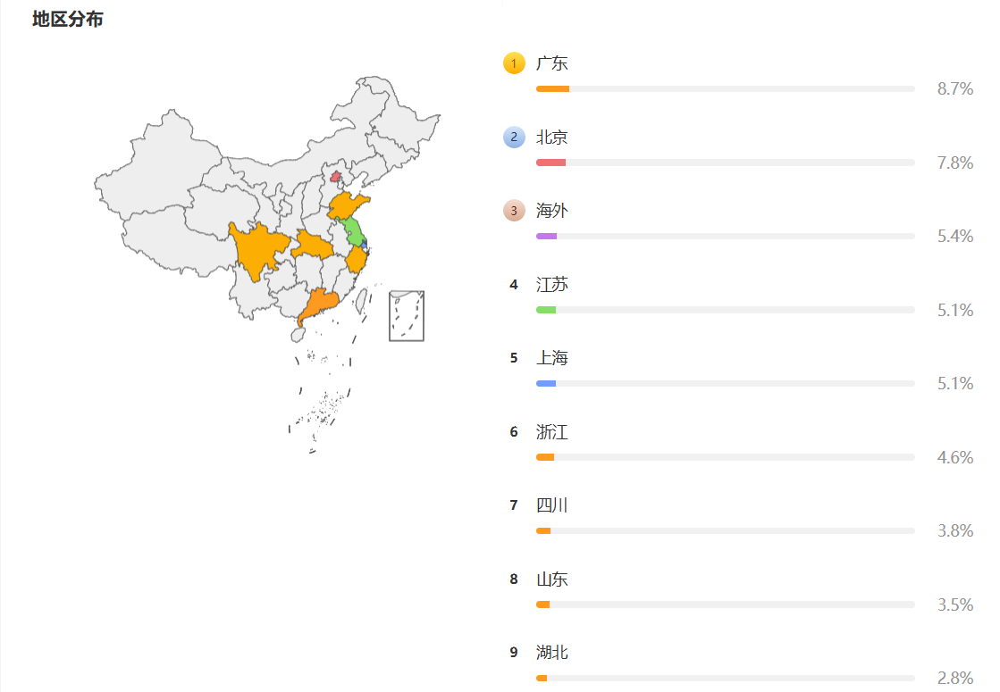
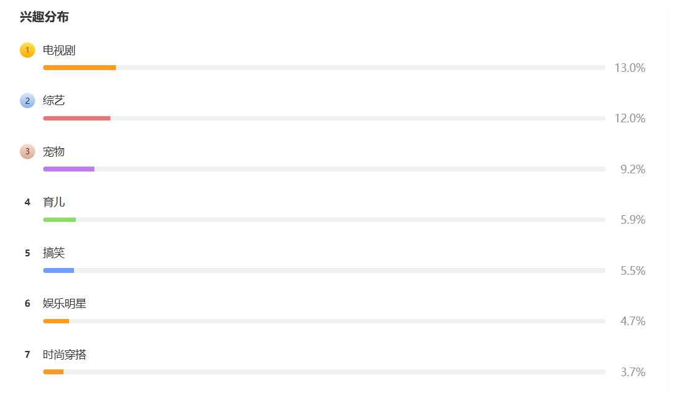